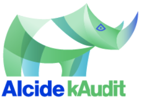
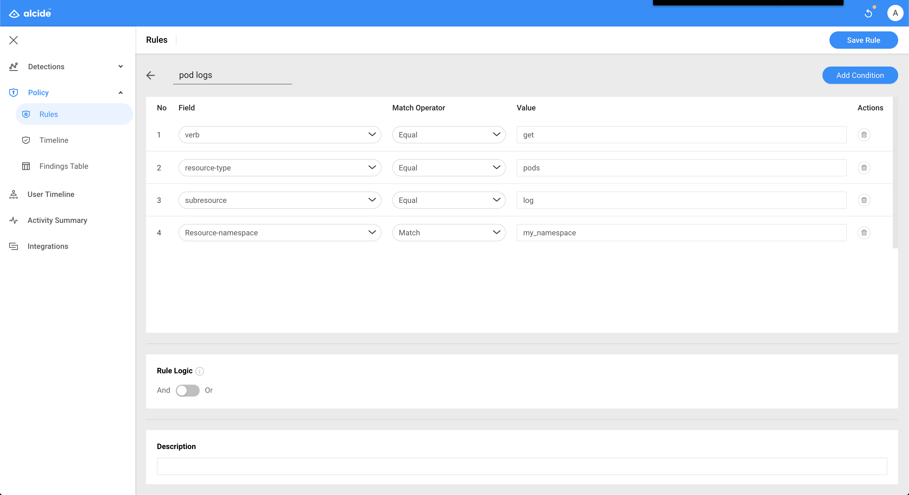

Alcide kAudit is designed to automatically analyze Kubernetes audit logs to detect anomalous behavior of users and service accounts. kAudit automatically detects security-related issues related to Kubernetes' administrative actions, especially anomalous behavior that can only be detected from observing extended context over multiple activities. In addition, kAudit supports Audit rules to detect violations of organization compliance policies regarding Kubernetes usage. Incident forensics, along with audit statistics, are presented in graphical and tabular summaries for easy investigation and analysis.
In this tutorial we will learn about kAudit support for organization compliance and control, Audit Rules, and how you can set up a Audit Rules to monitor specific activities or alerts on it.

Alcide kAudit can be used for::
- Detect and alert on operational and compliance policy violation
- Behavioral based anomaly detection
- Forensics analysis
For this tutorial you will need:
- kAudit to be installed in your environment kAudit helm chart installation

In order to manage Audit Policy Rules, Login to kAudit UI and in the left menu go to Policy > Rules.
Here you can find your existing rules, activate/deactivate, edit or delete them.

In this use-case we'll detect and notify on a user accessed into a pod using kubectl exec command.
Method
- To add a new rule use the Add rule button at the top right and choose Rule From Alcide Templates.
Choose pod execution and then Save Rule. - Start a sell interaction to a pod running in the monitored cluster by initiating this command:
kubectl exec -it <pod_name> sh
In this use-case we'll detect and notify on a tunnel opened to a specific network socket.
Method
- To add a new rule use the Add rule button at the top right and choose New Rule.
- Rule Name: port-forward-to-db (or any other name)
- Choose Add Condition: verb [ Equal ] create
- Choose Add Condition: resource-type [ Equal ] pods
- Choose Add Condition: subresource [ Equal ] portforward
- Choose Add Condition: resource-name [ Match ]
- Open a network channel to a pod running in the monitored cluster by initiating this command:
kubectl port-forward <pod_name>
In this use-case we'll detect and notify about read container logs from a specific namespace that runs workloads that handle senstive data such as card holder data (PCI), health information (HIPAA) etc.
Method
- To add a new rule use the Add rule button at the top right and choose New Rule.
- Rule Name: pod-logs (or any other name)
- Choose Add Condition: verb [ Equal ] get
- Choose Add Condition: resource-type [ Equal ] pods
- Choose Add Condition: subresource [ Equal ] log
- Choose Add Condition: resource-namespace [ Equal ]
- Watch pod's logging and outputs in a specific namespace in the monitored cluster by initiating this command:
kubectl logs -n <your_namespace> <pod_name>

In this use-case we'll detect and notify about access to an object of kind "secret" in a specific namespace.
Method
- To add a new rule use the Add rule button at the top right and choose New Rule.
- Rule Name: access_secret (or any other name)
- Choose Add Condition: verb [ Match ] get|list|watch
- Choose Add Condition: resource-type [ Equal ] secrets
- Choose Add Condition: resource-namespace [ Equal ]
- Access a secret object in a specific namespace in the monitored cluster by initiating this command:
kubectl get secrets -n <your_namespace> <pod_name> -o json
In this codelab we added an automated scan of an application on an kubernetes cluster as a step in your GitHub Actions workflow.